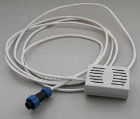
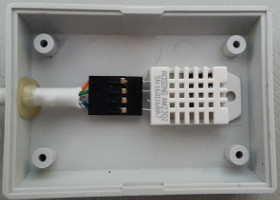
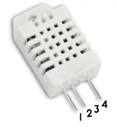

This sensor is not waterproof, it can be placed anywhere in the growing area but away from water splashes.
  
Inside the case, the sensor is an AM2302, also referred to as a DHT-22(datasheet), It has four pins, but one is not used. The unused pin is cut off, allowing the sensor to be 'keyed' to prevent connection the wrong way round.
The waterelf connector for this sensor is a four pin type SP-13, with numbered pins on the plugs and sockets themselves. The diagram below is looking into the face of the sensor plug.
| Pin | Function | Cable colour |
|---|---|---|
| 1 | Power (3.3V) | Orange |
| 2 | Data | Green |
| 3 | Not Used | |
| 4 | Ground | Blue |